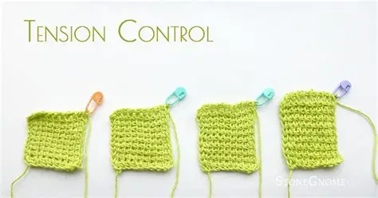
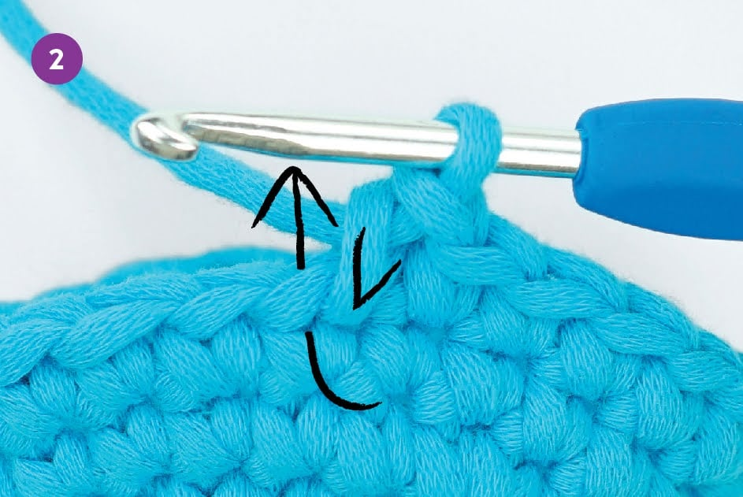

Understanding Yarn Tension
Yarn tension determines how tight or loose your stitches will be. Good tension = neat, even stitches.
Illustration:

- Hold your yarn the same way every time.
- Your stitches should not be too tight or too loose.
- Practice with simple rows to build consistency.
What Are Increases?
Increases add stitches to a row or round to make your project wider or to shape specific parts.
Common Increase Method:

- Work two stitches into the same stitch.
- Example: 2 sc in next stitch.
- Used for shaping circles, hats, and toys.